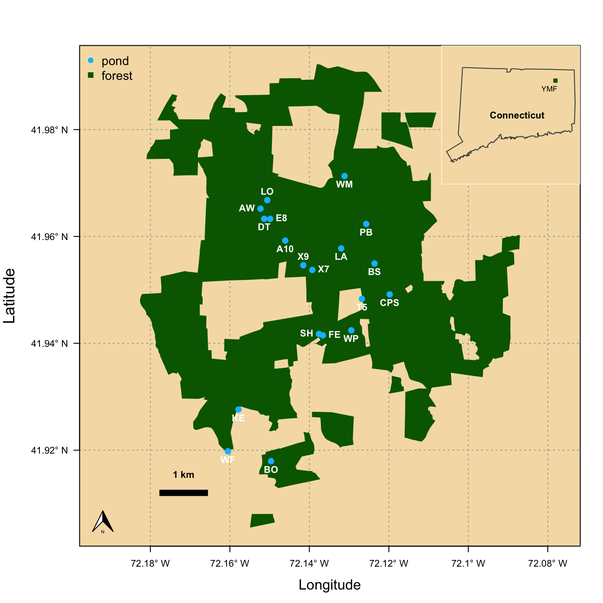
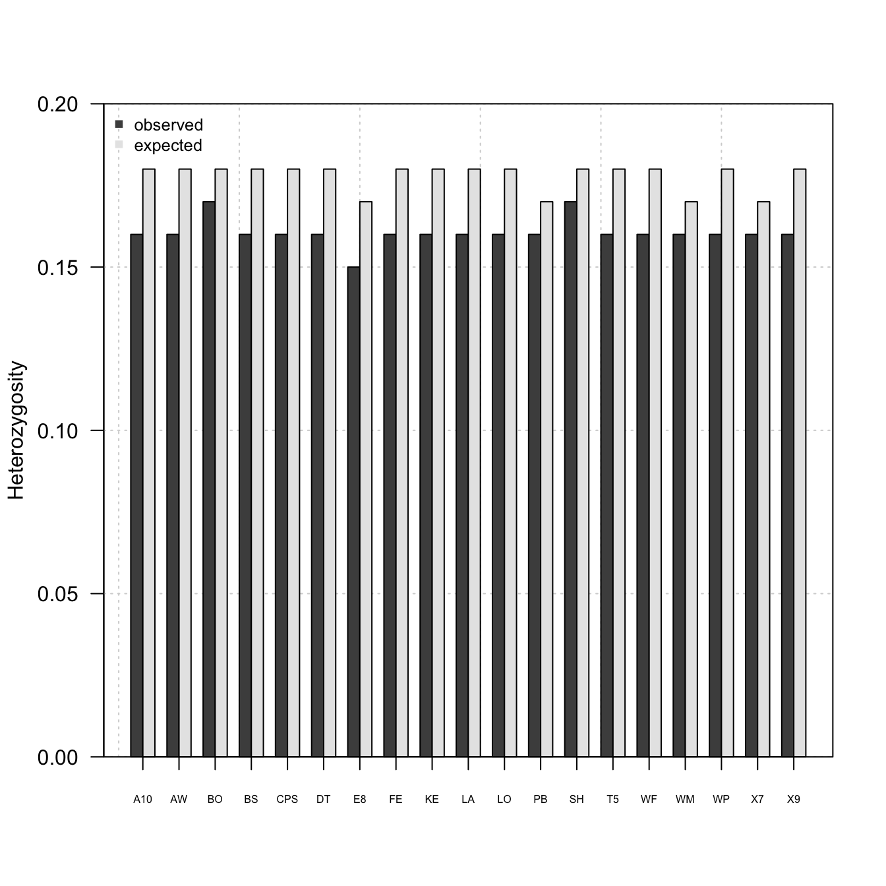
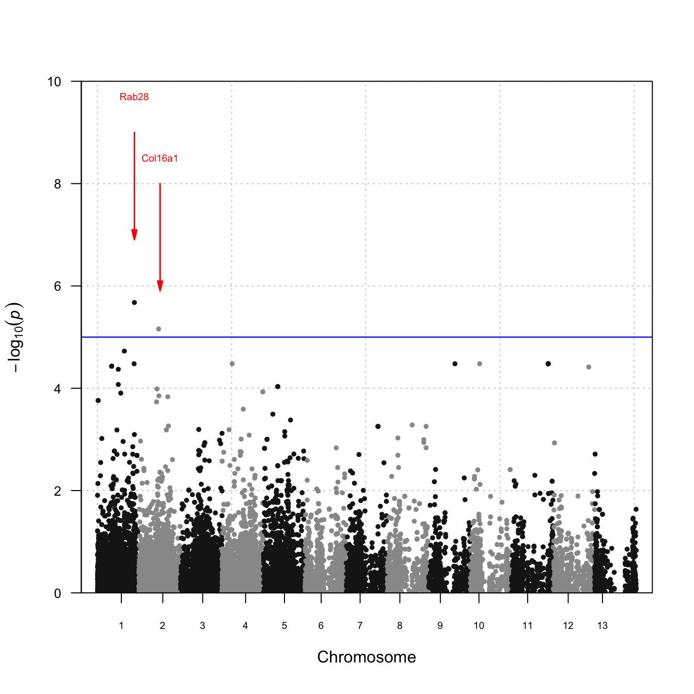

Almost 25 years of research by the Skelly lab indicate that wood frog populations at Yale-Myers forest exhibit drastic variation in phenotypic traits. Such variation could derive from a combination of local adaptation, parental effects, and plasticity. In contrast to such remarkable variation, our knowledge on the genetic variation among populations has lagged behind. This is one of the few studies that examines the population genetics of the wood frog at Yale-Myers, and provides a quantitative comparison between genetic differentiation and phenotypic differentiation to uncover selection signatures.
Code
## loading projectload("/Users/dpadil10/ASU Dropbox/Dylan Padilla/Yale/YMF2018/data/aRanSyl_genind_chr_pos.RData")metadata <-read.csv("/Users/dpadil10/ASU Dropbox/Dylan Padilla/Yale/YMF2018/data/YMF2018_RASYpopgen_sampleinfo.csv", row.names =1)##load("/gpfs/gibbs/project/skelly/dp996/YMF2018/data/aRanSyl_gl_chr_pos.RData")aRanSyl_rows <-rownames(aRanSyl_genind$tab)##aRanSyl_rowsaRanSyl_rows[-203] <-gsub(paste0("_S", ".*"), "", aRanSyl_rows[-203])aRanSyl_rows[203] <-"YNL_SCP2016_325"aRanSyl_rows <-data.frame(match.col = aRanSyl_rows)metadata$match.col <-paste(metadata$Pop, metadata$Extract, sep ="_")metadata$match.col[260:263] <-paste("YNL_", metadata$match.col[260:263], sep ="")metadata$match.col[3:48] <-gsub("(_)(.)", "\\10\\2", metadata$match.col[3:48])##metadata$match.col## cleaning 'meta' to ensure exactly one record per 'match.col'## this prevents the row count from expanding if meta has duplicate IDsmeta_unique <- metadata[!duplicated(metadata$match.col), ]##meta_unique$match.col## perform a left join## 'all.x = TRUE' ensures we keep all 205 rows from aRanSyl_rows#merged.tab <- merge(aRanSyl_rows, meta_unique, by = "match.col", all.x = TRUE)merged.tab <-merge(aRanSyl_rows, meta_unique, by ="match.col", all.x =FALSE)##str(merged.tab)##merged.tab#write.csv(merged.tab, file = "/Users/dpadil10/ASU Dropbox/Dylan Padilla/Yale/YMF2018/data/YMF2018_metadata_Mar-20-26.csv", row.names = FALSE)## I have to remove the second and third sample of the genind object## because I cannot find them in the metadataind.rm <-c("YMF2018_026_S23_R1_001", "YMF2018_035_S47_R1_001")aRanSyl_genind_pruned <-indNames(aRanSyl_genind)[!indNames(aRanSyl_genind) %in% ind.rm]##aRanSyl_genind_prunedaRanSyl_genind <- aRanSyl_genind[aRanSyl_genind_pruned, ]##aRanSyl_genind
Here is the data we have after quality control:
Code
## Converting genlight object to geno object##gl2geno(aRanSyl_gl, outfile = "aRanSyl_geno",##outpath = "/gpfs/gibbs/project/skelly/dp996/YMF2018/data/", verbose = NULL)## Run snmf algorithm##snmf1 <- snmf("/gpfs/gibbs/project/skelly/dp996/YMF2018/data/aRanSyl_geno.geno",## K = 1:10, # number of K ancestral populations to run## repetitions = 50, # 50 repetitions for each K## entropy = TRUE, # calculate cross-entropy## project = "new")snmf1 <-load.snmfProject("/Users/dpadil10/ASU Dropbox/Dylan Padilla/Yale/YMF2018/data/aRanSyl_geno.snmfProject")## extract the cross-entropy of all runs where K = 1ce <-cross.entropy(snmf1, K =1)ce2 <-cross.entropy(snmf1, K =2)##ce## find the run with the lowest cross-entropylowest.ce <-which.min(ce)lowest.ce2 <-which.min(ce2)##lowest.ce## extract Q-matrix for the best runqmatrix <-as.data.frame(Q(snmf1, K =1, run = lowest.ce))qmatrix2 <-as.data.frame(Q(snmf1, K =2, run = lowest.ce2))##head(qmatrix)## because I removed samples 2 and 3 from the genind object,## I have to remove rows 2 and 3 of the qmatrixqmatrix <- qmatrix[-c(2, 3), ]qmatrix2 <- qmatrix2[-c(2, 3), ]##qmatrixaRanSyl_genind$pop <-as.factor(merged.tab$Pond)##summary(aRanSyl_genind$pop)##aRanSyl_genind$pop## some of the ponds contain less than 5 individuals.## I am only keeping ponds with >= 5 individualstab <-data.frame(ind =summary(aRanSyl_genind$pop))tab$pop <-rownames(tab)tab.pruned <- tab[tab$ind >=5, ]aRanSyl_genind_pops <-popsub(aRanSyl_genind, sublist = tab.pruned$pop)##aRanSyl_genind_pops## the number of alleles per locus seems to range from 1 to 2## we have to work with only biallelic loci, so there should always be 2n <-names(which(nAll(aRanSyl_genind_pops) ==2))aRanSyl_genind_pops <- aRanSyl_genind_pops[loc = n]aRanSyl_genind_pops
/// GENIND OBJECT /////////
// 145 individuals; 15,537 loci; 31,074 alleles; size: 54.6 Mb
// Basic content
@tab: 145 x 31074 matrix of allele counts
@loc.n.all: number of alleles per locus (range: 2-2)
@loc.fac: locus factor for the 31074 columns of @tab
@all.names: list of allele names for each locus
@ploidy: ploidy of each individual (range: 2-2)
@type: codom
@call: .local(x = x, i = i, j = j, loc = ..1, drop = drop)
// Optional content
@pop: population of each individual (group size range: 6-10)
@other: a list containing: chromosome position
Code
##rownames(aRanSyl_genind_pops$tab)ind.rm2 <-data.frame(match.col =gsub(paste0("_S", ".*"), "",rownames(aRanSyl_genind_pops$tab)))merged.tab2 <-merge(merged.tab, ind.rm2, by ="match.col")##cbind(merged.tab2$match.col, rownames(aRanSyl_genind_pops$tab))##str(merged.tab2)##save(aRanSyl_genind_pops,## file = "/Users/dpadil10/ASU Dropbox/Dylan Padilla/Yale/YMF2018/data/aRanSyl_genind_pos_pops.Rdata")## because I ended up removing more individuals from the dataset,## now I have to make sure I remove the same individuals from the## qmatrix table. Practically, I do not have to do this because## in this particular case, every individual has exactly the same## genetic ancestry. But it is still a good practice to remove## the right individuals from the qmatrix table. This is because## if there were a strong population structure, the individuals## you remove from the qmatrix (i.e., each row) DO MATTER!tab.rm1 <-data.frame(ind =rownames(aRanSyl_genind$tab),qmatrix = qmatrix)tab.rm1.1<-data.frame(ind =rownames(aRanSyl_genind$tab),qmatrix = qmatrix2)tab.rm2 <-data.frame(ind =rownames(aRanSyl_genind_pops$tab),pop = aRanSyl_genind_pops$pop)tab.rm2.1<-data.frame(ind =rownames(aRanSyl_genind_pops$tab),pop = aRanSyl_genind_pops$pop)## the merging below guarantees that I am removing the correct## individuals from the qmatrixtab2 <-merge(tab.rm2, tab.rm1, by ="ind")tab2.1<-merge(tab.rm2.1, tab.rm1.1, by ="ind")##str(tab2)##str(tab2.1)qmplot <- tab2qmplot2 <- tab2.1qmplot$pop <-as.character(qmplot$pop)qmplot2$pop <-as.character(qmplot2$pop)##str(qmplot)##str(qmplot2)qmplot <- qmplot[order(qmplot$pop), ]qmplot2 <- qmplot2[order(qmplot2$pop), ]##aggregate(qmplot$ind, list(qmplot$pop), length)
First, we want to quantify whether there is population structure across ponds. To do this, I ran an admixture analysis with the LEA package in R.
According to the results, there is no population structure as suggested by the value that minimizes the cross-entropy (\(k=1\); see figure below).
Code
## plotting entropy to determine Kpar(mgp =c(3.2, 1, 0))plot(snmf1, col ="black", cex =1.5, pch =19, las =1)Arrows(x =1, y =0.490, x1 =1, y1 =0.495, col ="black",arr.type ="triangle", code =1, lwd =1.5, arr.length =0.2)
Also, I estimated pairwise \(F_{st}\) values to determine the genetic differentiation among populations. The results suggest relatively low levels of genetic differentiation as shown below.
Code
## computing pairwise Fst test##aRanSyl_fst <- genet.dist(aRanSyl_genind_pops, method = "WC84") %>% round(digits = 3)## saving here just in case the commands below fail##save(aRanSyl_fst,## file = "/Users/dpadil10/ASU Dropbox/Dylan Padilla/Yale/YMF2018/data/aRanSyl_fst.RData")## plotting admixture proportions and genetic differentiation##png("/Users/dpadil10/ASU Dropbox/Dylan Padilla/Yale/YMF2018/github/imgs/YMF_str_diff.png",## width = 7, height = 7, units = "in", res = 360)layout(matrix(c(1, 1, 1, 1, 1, 1,1, 1, 1, 1, 1, 1,2, 2, 2, 2, 2, 2,2, 2, 2, 2, 2, 2), ncol =6, nrow =4, byrow =TRUE))barplot(t(qmplot[3]), col ="gray", border ="white", space =0,xlab ="", xaxt ="n", ylab ="Admixture proportion",las =1, cex.lab =1.4)## adding population labels to the axis:medians <-c()for(i in1:length(qmplot$pop)){axis(1, at =median(which(qmplot$pop == qmplot$pop[i])), labels ="") medians <-c(medians, median(which(qmplot$pop == qmplot$pop[i])))}names <-unique(qmplot$pop)obj <-tapply(qmplot$ind, qmplot$pop, length)obj
A10 AW BO BS CPS DT E8 FE KE LA LO PB SH T5 WF WM WP X7 X9
6 10 9 9 6 6 6 7 6 6 8 8 9 9 8 7 7 9 9
Code
segments(x0 =0, y0 =0.01,x1 =0, y1 =1, lty =2, lwd =2)for(i in1:length(obj)){ sum <-sum(obj[1:i])##print(sum)segments(x0 = sum, y0 =0.01,x1 = sum, y1 =1, lty =2, lwd =2)}text(x =as.numeric(unique(as.character(medians))), y =par("usr")[3] -0.06,labels =unique(qmplot$pop), xpd =NA, srt =35, cex =0.5, adj =1)mtext("Pond", side =1, line =2)load("/Users/dpadil10/ASU Dropbox/Dylan Padilla/Yale/YMF2018/data/aRanSyl_fst.RData")aRanSyl_fst_mat <-as.matrix(aRanSyl_fst)aRanSyl_fst_mat[aRanSyl_fst_mat <0] <-0##aRanSyl_fst_mat[1:4, 1:4]## creating heatmap to plot genetic differentiation between## populationsget_lower_tri<-function(cor_matrix){ cor_matrix[lower.tri(cor_matrix, diag =TRUE)]return(cor_matrix)}lower_tri_matrix <- aRanSyl_fst_mat[lower.tri(round(aRanSyl_fst_mat, 2),diag =TRUE)]my_palette <-colorRampPalette(c("lightblue", "red"))(n =100)## create matrixfst_matrix <-matrix(NA, nrow =19, ncol =19)fst_matrix[lower.tri(fst_matrix, diag =TRUE)] <-round(lower_tri_matrix, 2)labs <-colnames(aRanSyl_fst_mat)par(mar =c(5, 5, 2, 2))## creating the image## we transform the matrix so it looks like the table (Row 1 at top)## t() transposes it, and we reverse the columns to flip the y-axisgrid_data <-t(fst_matrix[nrow(fst_matrix):1, ])## generate the heatmap colorsmy_colors <-colorRampPalette(c("#8ccddb", "#bf6c6c", "red"))(100)image(1:19, 1:19, # X and Y coordinates grid_data, # The dataaxes =FALSE, # Turn off default axes (we will draw our own)col = my_colors, # Colorsxlab ="", ylab ="")axis(2, at =1:19, labels =rev(labs), las =2,tick =FALSE, cex.axis =0.6)axis(1, at =1:19, labels = labs, las =2, tick =FALSE,cex.axis =0.6, las =1)## we loop through the original matrix to place the numbersn <-19for (row in1:n) {for (col in1:n) { val <- fst_matrix[row, col]if (!is.na(val)) {# Logic: # x coordinate = column index# y coordinate = n + 1 - row index (because y=1 is the bottom)text(x = col, y = n +1- row, labels = val, col ="black", cex =0.6) } }}## legend settingsleg_x <-15.5# X starting positionleg_y <-15.0# Y starting position (bottom of legend)leg_w <-0.5# Width of the barleg_h <-2.5# Height of the barnum_cols <-length(my_colors)## draw the gradient Bar## we stack tiny rectangles on top of each otherfor (i in1:num_cols) { y_start <- leg_y + (i -1) * (leg_h / num_cols) y_end <- leg_y + (i) * (leg_h / num_cols)rect(xleft = leg_x, ybottom = y_start, xright = leg_x + leg_w, ytop = y_end, col = my_colors[i], border =NA )}## add a black border around the legend barrect(leg_x, leg_y, leg_x + leg_w, leg_y + leg_h, border ="black")## add Legend Text Labels (0, 0.5, 1.0)## we map the data range (0 to 0.83) to the legend heightmin_val <-0max_val <-max(fst_matrix, na.rm=TRUE) # approx 0.83## label position 1 (Bottom)text(x = leg_x + leg_w +0.2, y = leg_y, labels = min_val,adj =0, cex =0.8)## label position 2 (Middle)text(x = leg_x + leg_w +0.2, y = leg_y + (leg_h /2),labels =round((max_val/2), 2), adj =0, cex =0.8)## label position 3 (Top)text(x = leg_x + leg_w +0.2, y = leg_y + leg_h,labels = max_val, adj =0, cex =0.8)## add Title above legendtext(x = leg_x + (leg_w/2), y = leg_y + leg_h +1,labels =expression(italic(F[st])), font =2, cex =1)
Code
##dev.off()
Drawing a map to have a better reference of the study area
ct_shape <- ct_shape[ct_shape$STUSPS =="CT", ]meta <-read.csv("/Users/dpadil10/ASU Dropbox/Dylan Padilla/Yale/YMF2018/data/YMF2018_metadata_Mar-20-26.csv")meta <- meta[-c(2, 3), c("Pond", "Long", "Lat")]meta <- meta[!duplicated(meta$Pond), ]meta <- meta[meta$Pond %in% qmplot$pop, ]##png("/Users/dpadil10/ASU Dropbox/Dylan Padilla/Yale/YMF2018/github/imgs/YMF_map.png",## width = 7, height = 7, units = "in", res = 360)layout(matrix(c(1, 1, 1, 2, 2,1, 1, 1, 2, 2,1, 1, 1, 1, 1,1, 1, 1, 1, 1,1, 1, 1, 1, 1), ncol =5, nrow =5, byrow =TRUE))par(mar =c(5, 7, 4, 2))## TRANSFORM TO LATITUDE/LONGITUDE (WGS84)## EPSG 4326 is the standard for GPS/Lat-Lon coordinatesboundary_ll <-st_transform(boundary, 4326)# Define Map Bounds in Degreesext <-st_bbox(boundary_ll)# Initialize plot frameplot(st_geometry(boundary_ll), xlim =c(ext["xmin"], ext["xmax"]), ylim =c(ext["ymin"], ext["ymax"]),axes =FALSE, xlab ="Longitude", ylab ="",border ="transparent", cex.lab =1.5)mtext(side =2, "Latitude", cex =1.1, line =5.5)par(new =TRUE)# Fill the plotting area with Sand coloru <-par("usr")rect(u[1], u[3], u[2], u[4], col ="#F5DEB3", border =NA)grid(col ="darkgray")# Add Forest (Light Green) and Ponds (Blue)plot(st_geometry(boundary_ll), border ="transparent",col ="darkgreen", add =TRUE, cex.lab =1.5)points(x = meta$Long, y = meta$Lat, pch =16, col ="deepskyblue",cex =1.5)ponds.rm <-c("LO", "AW", "DE", "E8", "X9", "X7", "SH", "FE")ponds1 <- meta[!meta$Pond %in% ponds.rm, ]text(x = ponds1$Long, y = ponds1$Lat, col ="white",labels = ponds1$Pond, pos =1, offset =0.5, font =2)ponds2 <- meta[meta$Pond %in% ponds.rm, ]text(x = ponds2$Long[1], y = ponds2$Lat[1], col ="white",labels = ponds2$Pond[1], pos =4, offset =0.5, font =2)text(x = ponds2$Long[2], y = ponds2$Lat[2], col ="white", labels = ponds2$Pond[2], pos =2, offset =0.5, font =2)text(x = ponds2$Long[3], y = ponds2$Lat[3], col ="white", labels = ponds2$Pond[3], pos =4, offset =0.5, font =2)text(x = ponds2$Long[4], y = ponds2$Lat[4], col ="white", labels = ponds2$Pond[4], pos =3, offset =0.5, font =2)text(x = ponds2$Long[5], y = ponds2$Lat[5], col ="white", labels = ponds2$Pond[5], pos =4, offset =0.5, font =2)text(x = ponds2$Long[6], y = ponds2$Lat[6], col ="white", labels = ponds2$Pond[6], pos =2, offset =0.5, font =2)text(x = ponds2$Long[7], y = ponds2$Lat[7], col ="white", labels = ponds2$Pond[7], pos =3, offset =0.5, font =2)legend("topleft", legend =c("pond", "forest"), pch =c(16, 15),col =c("deepskyblue", "darkgreen"), bty ="n", cex =1.3)# X-Axis (Longitude)at_x <-axTicks(1)labels_x <-paste0(abs(round(at_x, 2)), "° W") # Convert to absolute for "W" notationaxis(1, at = at_x, labels = labels_x, cex.axis =1)# Y-Axis (Latitude)at_y <-axTicks(2)labels_y <-paste0(round(at_y, 2), "° N")axis(2, at = at_y, labels = labels_y, cex.axis =1, las =1)box() # Frame the map# In CT, 1km is approximately 0.012 degrees of Longitudescale_len <-0.012rect(ext["xmin"] +0.005, ext["ymin"] +0.007, ext["xmin"] +0.005+ scale_len, ext["ymin"] +0.006, col ="black")text(ext["xmin"] +0.005+ (scale_len/2), ext["ymin"] +0.01, "1 km", cex =1, font =2)addnortharrow(pos ="bottomleft", scale =0.4)eastford <-st_point(c(-72.0837, 41.9032))eastford_sf <-st_sfc(eastford, crs =4326)plot(st_geometry(ct_shape), col ="#F5DEB3", # Sand / Wheat colorborder ="grey30", lwd =1,axes =FALSE,bg ="#F5DEB3")points(eastford_sf, pch =15, col ="darkgreen")text(eastford_sf -0.09, "YMF", cex =0.8)legend("center", "Connecticut", cex =1, bty ="n", text.font =2)

Code
##dev.off()
Based on the results described above, we now know that there seems to be low genetic differentiation between populations (0-0.03) and no population structure. By contrast, extensive work from the Skelly Lab reveales that there is an effect of global site factor (GSF) and water temperature on development, thermal traits, life-history traits across populations of the wood frog. Sometimes such effects are observed in common garden experiments, rather than in the wild. One puzzling pattern is that individuals from shaded wetlands develop and grow faster than those from warmer environments, potentially compensating for shorter growing seasons (countergradient variation).
Now, here are the things that we do not know and could address moving forward:
How populations have remained genetically similar in spite of strong phenotypic variation?
Dr Skelly and I propose two potential scenarios that may explain this pattern. First, the populations of Yale Myers might have recently diverged from an ancestor and it has not been long enough since the split for genetic drift, recombination, mutation, and selection to produce higher levels of genetic differentiation between populations. Second, not only have the populations recently split, but also, there might be a considerably high gene flow among populations, which might hinder the power of selection.
These ideas reflect two potential demographic scenarios that we can simulate based on the observed data (See figure below).
The figure above shows simple cases involving only two populations, but the same principles apply for a case involving 5 populations, which is the case of our study. The two scenarios I would like to assess are represented in the cartoon by the model of “no gene flow” and the model of “recent gene flow”. I added a third model of “ancient split and gene flow” to test what would happen.
I fitted the models with fastsimcoal2 as indicated below:
//Parameters for the coalescence simulation program : fastsimcoal.exe
5 samples to simulate :
//Population effective sizes (number of genes)
NPOP0
NPOP1
NPOP2
NPOP3
NPOP4
//Sample sizes and age (number of genes)
6
4
4
4
6
//Growth rates: 0 = stationary
0
0
0
0
0
//Number of migration matrices : 1
1
//Migration matrix 0
0 MIG10 MIG20 MIG30 MIG40
MIG01 0 MIG21 MIG31 MIG41
MIG02 MIG12 0 MIG32 MIG42
MIG03 MIG13 MIG23 0 MIG43
MIG04 MIG14 MIG24 MIG34 0
//historical event: time, source, sink, migrants, new deme size, new growth rate, migration matrix index
4
TDIV 1 0 1 RES_ANC 0 0
TDIV 2 0 1 1 0 0
TDIV 3 0 1 1 0 0
TDIV 4 0 1 1 0 0
//Number of independent loci [chromosome]
1 0
//Per chromosome: Number of contiguous linkage Block
1
//per Block:data type, number of loci, per gen recomb and mut rates
FREQ 1 0 1.3e-9
I ran fastsimcoal 50 times, selected the run with the best parameter estimates, and calculated the AIC of the model (see below). The results suggested that a model of recent split with asymetric gene flow was strongly supported by the data (see table below).
Model comparison beased on AIC
Code
aic.table <-read.table("/Users/dpadil10/ASU Dropbox/Dylan Padilla/Yale/YMF2018/SFS/fastsimcoal/AIC_model_table.txt", header =TRUE, sep ="")aic.table <- aic.table[-c(2, 4), ]rownames(aic.table) <-c("RecentSplit no gene flow", "RecentSplit with gene flow")aic.table$deltaL <-as.numeric(aic.table$deltaL)aic.table$AIC <-as.numeric(aic.table$AIC)kable(aic.table, digits =2, format ="html") %>%kable_styling(bootstrap_options ="striped")
deltaL
AIC
RecentSplit no gene flow
69.65
176463.8
RecentSplit with gene flow
45.09
176390.7
Here is a plot of the results
Code
##png("/Users/dpadil10/ASU Dropbox/Dylan Padilla/Yale/YMF2018/github/imgs/YMF_demo_model.png",## width = 7, height = 7, units = "in", res = 360)# -------------------------------------------------------------------------# 1. DATA INPUT (Values from .bestlhoods and .par files)# -------------------------------------------------------------------------# Population sizes (NPOP0 to NPOP4)n_sizes <-c(985, 697, 451, 306, 1290)names(n_sizes) <-c("BS", "DT", "E8", "PB", "X7")# Divergence Time (TDIV)t_div <-24# Migration Matrix (Row = Source, Col = Sink)# Read values exactly as they appear in the .par migration matrixmig_matrix <-matrix(c(0.0000000e+00, 3.5742554e-03, 4.4949653e-03, 8.1153350e-08, 6.2972920e-06,1.5531556e-07, 0.0000000e+00, 3.0488758e-07, 1.7747878e-06, 2.4624709e-03,5.2343091e-06, 6.0826895e-04, 0.0000000e+00, 2.9789123e-07, 3.6922371e-07,2.2143443e-05, 1.3147249e-02, 3.9842576e-04, 0.0000000e+00, 4.0760683e-04,3.1822288e-06, 1.2188775e-07, 9.7335104e-07, 2.8734315e-06, 0.0000000e+00), nrow =5, byrow =TRUE)# -------------------------------------------------------------------------# 2. PLOT PARAMETERS# -------------------------------------------------------------------------n_pops <-length(n_sizes)x_coords <-seq(1.5, 9.5, length.out = n_pops)max_width <-0.7widths <- (n_sizes /max(n_sizes)) * max_width# Setup Plot Areapar(mar =c(5, 5, 2, 2), family ="sans")plot(NULL, xlim =c(0, 11), ylim =c(-3, t_div +8), xlab ="", ylab ="Time (generations)", xaxt ="n", frame.plot =FALSE, las =1)axis(2, at =seq(0, t_div, 5), labels =FALSE)# -------------------------------------------------------------------------# 3. DRAW POPULATION BRANCHES (Star Split)# -------------------------------------------------------------------------anc_x <-mean(x_coords)for (i in1:n_pops) {# Current population bar (Width scaled by Ne)rect(x_coords[i] - widths[i]/2, 0, x_coords[i] + widths[i]/2, t_div, col ="gray95", border ="black", lwd =1.2)# Connection to Ancestral node at TDIVsegments(x_coords[i], t_div, anc_x, t_div +5, lwd =1.5, col ="gray40")# Labelstext(x_coords[i], -2, names(n_sizes)[i], font =2, cex =1)text(x_coords[i], t_div/4, paste0("Ne = ", n_sizes[i]), srt =90, cex =0.7)}# Ancestral Population Markerpoints(anc_x, t_div +5, pch =21, bg ="black", col ="white", cex =2)text(anc_x, t_div +7, "Ancestral Population", font =2, cex =0.9)# -------------------------------------------------------------------------# 4. DRAW NON-OVERLAPPING MIGRATION ARROWS# -------------------------------------------------------------------------# Define a threshold to avoid cluttering with near-zero migration ratesthreshold <-1e-4# Create a list of all significant migrations to calculate unique offsetssig_migrations <-which(mig_matrix > threshold, arr.ind =TRUE)# Vertical spacing setupy_start <-4# First arrow heighty_gap <- (t_div -6) /nrow(sig_migrations) # Space arrows evenly along the y-axisfor (k in1:nrow(sig_migrations)) { row <- sig_migrations[k, 1] # Source col <- sig_migrations[k, 2] # Sink# Calculate unique y-position for this specific migration event y_pos <- y_start + (k * y_gap)# Source and destination X coordinates# We start/end the arrow at the edge of the population bar x_start <- x_coords[row] + (if(x_coords[row] < x_coords[col]) widths[row]/2else-widths[row]/2) x_end <- x_coords[col] + (if(x_coords[row] < x_coords[col]) -widths[col]/2else widths[col]/2)# Draw Arrowarrows(x_start, y_pos, x_end, y_pos, length =0.08, lwd =log10(mig_matrix[row, col] *10000) +1, # Thickness scaled to ratecol =adjustcolor("royalblue4", alpha.f =0.7))# Label the rate above the arrowtext(mean(c(x_start, x_end)), y_pos +0.6, labels =formatC(mig_matrix[row, col], format ="e", digits =1), cex =0.55, col ="royalblue4", font =3)}# -------------------------------------------------------------------------# 5. LEGEND# -------------------------------------------------------------------------legend("topleft", legend ="Gene flow", lwd =c(2, 10),col ="royalblue4", bty ="n", cex =0.6)
Based on the results of the model, we can estimate how long it would take for the populations to reach some levels of genetic differentiation in face of genetic drift, recombination, gene flow, but not selection. We can do that by estimating pairwise \(F_{st}\) between DT and E8.
I estimated the time for populations to reach \(F_{st}>0.09\). Although, this threshold might seem arbitrary, previous personal observations across the range of the species suggest that populations can be highly differentiated with \(F_{st}=0.8\). However, a previous work on the population genetics of the wood frog in an altered forested wetland ecosystem found a max \(F_{st}=0.05\) (Skibbe et. al., (2021)), and they considered that value as a significant level of genetic differentiation.
To estimate the time (\(t\)) required to reach those levels of genetic differentiation (\(F_{st}=0.05\) and \(F_{st}>0.09\)), I simulated a \(10~Mb\) region of the genome, with a mutation rate of \(1.3\times10^{-9}\), and a baseline recombination rate of \(1\times10^{-8}\), and an asymetrical gene flow of \(m=6.1\times10^{-4}\). I ran the simulation in SLiM as indicated below:
initialize() {
initializeMutationRate(1.3e-9);
initializeMutationType("m1", 0.5, "f", 0.0);
initializeGenomicElementType("g1", m1, 1.0);
// Simulate 10MB to represent the huge 5.2GB genome accurately
initializeGenomicElement(g1, 0, 9999999);
initializeRecombinationRate(1e-8);
}
// Create ancestral population (burn-in to reach equilibrium)
// RES_ANC represents a resize coefficient for the ancestral
// population relative to a reference population (usually NPOP0)
// calculate the actual number of individuals, do NPOP0 x RES_ANC
1 early() {
sim.addSubpop("p1", 7480);
}
// Split after a proper burn-in (approx 10*N generations)
74800 early() {
sim.addSubpopSplit("p2", 985, p1);
sim.addSubpopSplit("p3", 697, p1);
sim.addSubpopSplit("p4", 451, p1);
sim.addSubpopSplit("p5", 306, p1);
sim.addSubpopSplit("p6", 1290, p1);
// --- UNIDIRECTIONAL GENE FLOW ---
// m is the probability that an individual in the target pop
// has a parent from the source pop.
defineConstant("m", 0.00061);
// Aymmetrical migration between p3 and p2
p2.setMigrationRates(p3, m);
}
74800:150000 late() {
// Print the header at the exact moment of the split
if (sim.cycle == 74800) {
catn("generation,fst");
}
// Output data every 10 generations
if (sim.cycle % 10 == 0) {
fst = calcFST(p3.haplosomes, p2.haplosomes);
// Calculate time relative to the 74800 split
catn((sim.cycle - 74800) + "," + fst);
// 3. Stop if threshold is reached
if (fst > 0.09) {
sim.simulationFinished();
}
}
}
// Safety stop in case it never reaches 0.09
150000 late() { sim.simulationFinished(); }
The results of the simulation indicate that for two populations (DT and E8), the \(t\) required for genetic drift, recomnbination, gene flow, but not selection, to reach at least \(F_{st}=0.05\) is about \(200\) generations. According to the most likely demographic scenario, the populations of Yale-Myers Forest split \(24\) generations ago, which is not long enough for us to observe a genetic differentiation of at least \(0.05\). Note that this is just what would happen between populations in the presence of genetic drift, recombination, and gene flow. This is not evaluating the role of selection.
Code
## function to clean and read the SLiM output fileread_slim_output <-function(filename) {# Read all lines into a vector all_lines <-readLines(filename)## find the index of the line that contains column headers header_index <-which(grepl("generation,fst", all_lines))[1]## check if header was foundif (is.na(header_index)) {stop(paste("Could not find the header 'generation,fst' in", filename)) }## keep only the header and the rows below it data_lines <- all_lines[header_index:length(all_lines)]## filter out any non-data lines at the end (like "SIGNIFICANT DIFFERENTIATION REACHED")## we only keep the header line and lines that look like: number,number data_lines <- data_lines[grepl("^generation,fst$|^[0-9.-]+,[0-9.-]+", data_lines)]## convert the cleaned lines into a data frame df <-read.csv(text = data_lines, header =TRUE)return(df)}## load all the run files (e.g., run_1.csv, run_2.csv, etc.)files <-list.files(path ="/Users/dpadil10/ASU Dropbox/Dylan Padilla/Yale/YMF2018/scripts/slim/",pattern ="run_.*\\.csv", full.names =TRUE)all_runs_list <-lapply(files, function(f) { df <-read_slim_output(f) df$run_id <- f # add a column to track which run this isreturn(df)})## create the all_data object by merging the listall_data <-do.call(rbind, all_runs_list)## aggregate the data (calculate mean and SD per generation)means <-aggregate(fst ~ generation, data = all_data, FUN = mean)sds <-aggregate(fst ~ generation, data = all_data, FUN = sd)counts <-aggregate(fst ~ generation, data = all_data, FUN = length)## merge these into a summary table and calculate CIsummary_stats <- meansnames(summary_stats)[2] <-"mean_fst"summary_stats$sd <- sds$fstsummary_stats$n <- counts$fst## calculate 95% CI: Mean +/- (1.96 * (SD / sqrt(n)))summary_stats$se <- summary_stats$sd /sqrt(summary_stats$n)summary_stats$lower <- summary_stats$mean_fst - (1.96* summary_stats$se)summary_stats$upper <- summary_stats$mean_fst + (1.96* summary_stats$se)## sort by generation (CRITICAL for polygon() to work)summary_stats <- summary_stats[order(summary_stats$generation), ]##head(summary_stats)##tail(summary_stats)## initialize the plot area## we set ylim to slightly above the upper CI to ensure everything fitsplot(summary_stats$generation, summary_stats$mean_fst, type ="n",ylim =c(0, max(summary_stats$upper, na.rm =TRUE, 0.11)),xlim =c(0, 500),xlab ="Generations since split",ylab =expression(Pairwise~italic(F[st])~between~DT~and~E8),las =1)## draw the smooth CI envelope## we use na.omit to prevent gaps if some generations have NAsclean_stats <-na.omit(summary_stats)polygon(c(clean_stats$generation, rev(clean_stats$generation)),c(clean_stats$upper, rev(clean_stats$lower)),col =rgb(0, 0, 1, 0.2), border =NA)## add the mean Linelines(summary_stats$generation, summary_stats$mean_fst, col ="blue", lwd =2)## add the threshold line (0.09)abline(h =0.09, col ="red", lty =2, lwd =1.5)## add legend and gridgrid(nx =NULL, ny =NULL, col ="lightgray", lty ="dotted")legend("topleft", legend =c("Mean Fst", "95% CI", "Threshold (0.09)"),col =c("blue", NA, "red"),fill =c(NA, rgb(0.2, 0.4, 0.8, 0.3), NA),border =NA,lty =c(1, NA, 2),lwd =c(2, NA, 1.5),bty ="n")text(x =400, y =0.06, expression(italic(t)%~~%480~generations), cex =1.2)
I also looked at genetic diversity from a different perspective. That is, I estimated the observed and expected heterozygosity across populations. The observed heterozygosity (\(H_{o}\)) is the actual proportion of heterozygous individuals in a population, calculated by dividing the number of heterozygotes by the total sample size. Expected heterozygosity (\(H_{e}\) or genetic diversity) is the theoretical proportion of heterozygotes predicted by Hardy-Weinberg equilibrium, usually calculated as \(1-\sum P_{i}^2\) (where \(P_{i}\) is the frequency of the \(i\)-th allele).
The results show that both the observed and expected heterozygosity slightly vary across populations but not drastically (see figure below). That is to say, the genetic diversity among populations is similar.
Code
##png("/Users/dpadil10/ASU Dropbox/Dylan Padilla/Yale/YMF2018/github/imgs/YMF_hexpop.png",## width = 7, height = 7, units = "in", res = 360)barplot(het, ylim =c(0, 0.2), las =1, beside =TRUE, border =FALSE,ylab ="Heterozygosity", xaxt ="n", col =c("white", "white"))grid()par(new =TRUE)barplot(het, ylim =c(0, 0.2), las =1, yaxt ="n", ylab ="",xaxt ="n", beside =TRUE)box()axis(side =1, at = mp[1, ]+0.5, labels =colnames(het), cex.axis =0.5)legend("topleft", legend =c("observed", "expected"), pch =15, bty ="n",cex =0.8, col =c(gray(0.3), gray(0.9)))

Code
##dev.off()
Code
barplot(aRanSyl_Fis, ylim =c(0, 0.10), las =1,ylab =expression("Inbreeding coefficient"~(F[IS])), xaxt ="n",col ="white", yaxt ="n", border =FALSE)grid()par(new =TRUE)barplot(aRanSyl_Fis, ylim =c(0, 0.10), las =1,xaxt ="n", ylab ="")box()axis(side =1, at = mp2, labels =names(aRanSyl_Fis), cex.axis =0.5)mtext(side =1, 'Pond', line =2)
The next follow up question I had was: Can the level of genetic differentiation observed above derive in selection?
To answer this question, I perform a test for selection based on the OutFLANK algorithm, which enables us to find \(F_{st}\) outliers based on an inferred distribution of neutral \(F_{st}\).
According to the results, the ansewer is no. There are no SNPs under selection (see figure below).
## extracting OutFLANK resultsoutflnk.df <- outflnk$outflank$results## removing duplicated rows for each SNP locusrowsToRemove <-seq(1, nrow(outflnk.df), by =2)outflnk.df <- outflnk.df[-rowsToRemove, ]## printing number of outliers (TRUE)##outflnk.df$OutlierFlag %>% summary## extracting outlier IDsoutlier_indexes <-which(outflnk.df$OutlierFlag ==TRUE)outlierID <-locNames(aRanSyl_genind_pops)[outlier_indexes]##outlierID# converting Fsts <0 to zerooutflnk.df$FST[outflnk.df$FST <0] <-0# Italic labelsfstlab <-expression(italic("F")[st])hetlab <-expression(italic("H")[e])## plot He versus Fstggplot(data = outflnk.df) +geom_point(aes(x = He, y = FST, colour = OutlierFlag)) +scale_colour_manual(values =c("black","red"),labels =c("Neutral SNP","Outlier SNP"))+xlab(hetlab) +ylab(fstlab) +theme(legend.title =element_blank(),plot.title =element_text(hjust =0.5, size =15,face ="bold"))
Even though we detected no selection based on the genetic differentiation among populations, the environmental conditions may exert high selective pressures. Thus, performing a Genotype-Environment association analysis might reveal different results.
To do that, I compiled some data of environmental factors across ponds such as elevation, GSF, area, and distance to road (see figure below).
/// GENIND OBJECT /////////
// 139 individuals; 15,524 loci; 31,048 alleles; size: 53.8 Mb
// Basic content
@tab: 139 x 31048 matrix of allele counts
@loc.n.all: number of alleles per locus (range: 2-2)
@loc.fac: locus factor for the 31048 columns of @tab
@all.names: list of allele names for each locus
@ploidy: ploidy of each individual (range: 2-2)
@type: codom
@call: .local(x = x, i = i, j = j, loc = ..1, drop = drop)
// Optional content
@pop: population of each individual (group size range: 6-10)
@other: a list containing: chromosome position
Code
## we have to make sure that the order of the rows in## the genind$tab object is the same order of the rows## observed in the merged.tab3 tablemerged.tab3$match.col <-as.factor(merged.tab3$match.col)##str(merged.tab3)test <- merged.tab3[order(merged.tab3$match.col), ]##head(data.frame(test$match.col, rownames(aRanSyl_genind_pops2$tab)))##tail(data.frame(test$match.col, rownames(aRanSyl_genind_pops2$tab)))merged.tab3 <- merged.tab3[order(merged.tab3$match.col), ]merged.tab3$samples_genind <-rownames(aRanSyl_genind_pops2$tab)##names(merged.tab3)## we’ll use a simple approach to imputing missing genotype values:## we will impute using the most common genotype at each SNP across## all individualsx <-apply(aRanSyl_genind_pops2$tab, 2,function(x) replace(x, is.na(x),as.numeric(names(which.max(table(x))))))##x <- tab(aRanSyl_genind_pops, NA.method = "mean")##x[1:5, 1:5]snppca <-as.data.frame(x)##snppca[1:10, 1:10]## genotypes and environmental data are in the same order##identical(rownames(snppca), merged.tab3$samples_genind)## adding more variablesdf <-read.table("/Users/dpadil10/ASU Dropbox/Dylan Padilla/Yale/YMF2018/data/sampleData.allPonds.combined.tsv", sep ="\t", header =TRUE)##str(df)df$sampleName <-as.factor(df$sampleName)names(df)[1] <-"match.col"df <- df[!duplicated(df$match.col), ]##head(df)## adding data from of temperature from Gahm et. al., (2020)df$temp[df$Pond =="CPS"] <-14.63434786df$temp[df$Pond =="DE"] <-16.90162425df$temp[df$Pond =="LO"] <-15.41743489df$temp[df$Pond =="MI"] <-11.30101444##tapply(df$temp, df$Pond, mean)test <-merge(df[c(1, 9)], merged.tab3, by ="match.col")##str(test)test$match.col <-droplevels(test$match.col)##test$temp## X.env <- merged.tab3[c(17, 18, 22, 47, 64)], there are## two measures of canopy cover. I stayed with GSFX.env <- merged.tab3[c(17, 18, 22, 64)]X.env$temp <- test$temp##str(X.env)## latent factor GEA modelmod_lfmm <- LEA::lfmm2(input = snppca, env =scale(X.env[1:4]), K =1, effect.sizes =TRUE)## get environmental effect sizesB <- mod_lfmm@Bpv <-lfmm2.test(mod_lfmm, input = snppca, env =scale(X.env[1:4]),full =TRUE)## define candidate loci for GO analysiscandidates <--log10(pv$pvalue) >5adaptive.snps <-colnames(snppca)[which(-log10(pv$pvalue) >5)]##write.table(as.data.frame(adaptive.snps),## file = "/Users/dpadil10/ASU Dropbox/Dylan Padilla/Yale/YMF2018/data/aRanSyl_adaptive_snps.txt",## col.names = FALSE, row.names = FALSE)## how many candidate loci?##sum(candidates)/2## we have to determine the position of the adaptive lociadaptive.snps <-colnames(snppca)[which(-log10(pv$pvalue) >5)]##aRanSyl_genind_pops2all.loc <-data.frame(ID =colnames(snppca),pvalues =as.numeric(pv$pvalues))##head(all.loc)##tail(all.loc)all.loc$ID <-gsub("\\..*", "", all.loc$ID)##head(all.loc)##dim(all.loc)adaptive.snps <-gsub("\\..*", "", adaptive.snps)adaptive.snps <-unique(adaptive.snps)##adaptive.snpsvcf_data <-read.vcfR("/Users/dpadil10/ASU Dropbox/Dylan Padilla/Yale/YMF2018/data/aRanSyl_copy_snps.vcf.gz",verbose =FALSE)fix_data <-as.data.frame(vcf_data@fix)##head(fix_data)##tail(fix_data)##class(fix_data)## positionsloc1 <- fix_data[fix_data$ID == adaptive.snps[1], ]##loc1loc2 <- fix_data[fix_data$ID == adaptive.snps[2], ]##loc2loc3 <- fix_data[fix_data$ID == adaptive.snps[3], ]##loc3loc4 <- fix_data[fix_data$ID == adaptive.snps[4], ]##loc4## map the positions onto gff filegff <-read.delim("/Users/dpadil10/ASU Dropbox/Dylan Padilla/Yale/aRanSyl-PopGen/data/aRansyl_genome.gff", header =FALSE, sep ="\t")##str(gff)colnames(gff) <-c("CHROM", "Source", "Type", "Start", "End","Score", "Strand", "Phase", "Attributes")##head(gff)gff.genes <- gff[gff$Type =="gene", ]##str(gff.genes)##loc1$POS##loc1$CHROM##loc2$POS##loc2$CHROM##gff.genes[gff.genes$Start == 694576498, ] ## gene Rab28, snp POS falls## between 694576498 and 694764569##gff.genes[gff.genes$Start == 325882325, ] ## gene Col16a1_3, snp POS falls## between 325882325 and 326128092
Code
## now let's see how the env varies across pondsX.env.pop <-data.frame(scale(X.env), pop = aRanSyl_genind_pops2$pop,ind =as.character(merged.tab3$match.col))X.env.pop <- X.env.pop[order(X.env.pop$pop), ]##str(X.env.pop)mean.env <-aggregate(X.env.pop[1:6], list(pop = X.env.pop$pop), mean)##png("/Users/dpadil10/ASU Dropbox/Dylan Padilla/Yale/YMF2018/github/imgs/YMF_env.png",## width = 7, height = 7, units = "in", res = 360)##mean.envx <-1:18plot(elevation ~ x, data = mean.env, type ="n", pch =16,col ="gold", xaxt ="n", las =1, ylab ="Environment",ylim =c(-3, 4), xlab ="", axes =FALSE)grid()par(new =TRUE)plot(elevation ~ x, data = mean.env, type ="l", pch =16,col ="gold", xaxt ="n", las =1, ylab ="Environment",ylim =c(-3, 4), xlab ="", lwd =2)lines(wtGSF ~ x, data = mean.env, type ="l", pch =16,col ="skyblue", lwd =2)lines(area_m2 ~ x, data = mean.env, type ="l", pch =16,col ="orange", lwd =2)lines(Dis_to_road ~ x, data = mean.env, type ="l", pch =16,col ="red", lwd =2)axis(side =1, at = x, labels = mean.env$pop, cex.axis =0.5)mtext(side =1, 'Pond', line =2)legend("topleft", legend =c("elevation", "wtGSF", "area","distance to road"),lwd =2,col =c("gold", "skyblue", "orange", "red"),bty ="n", cex =0.8)
Code
##dev.off()
The genotype-environment association analysis revealed two potential alleles under selection in chromosome 1 (Rab28) and chromosome 2 (Col16a1), respectively (see figure below).
Code
## Manhattan plot## setting up data for plotting manhattan plotall.loc <-data.frame(ID =colnames(snppca),pvalues =as.numeric(pv$pvalues))##head(all.loc)##tail(all.loc)unique.all.loc <-data.frame()unique.all.loc <- all.loc[seq(1, nrow(all.loc), 2), ]##head(unique.all.loc)unique.all.loc$ID <-gsub("\\..*", "", unique.all.loc$ID)##head(unique.all.loc)fix_data2 <-merge(fix_data[c(1, 2, 3)], unique.all.loc, by ="ID")fix_data2 <- fix_data2[order(fix_data2$CHROM), ]man <- fix_data2colnames(man) <-c("SNP", "CHR", "BP", "P")##head(man)man$CHR <-as.numeric(factor(man$CHR))man$BP <-as.numeric(factor(man$BP))man <- man[man$CHR %in%c(1:13), ]##str(man)loc1.1<- man[man$SNP =="loc14587_pos52", ]loc2.1<- man[man$SNP =="loc22468_pos103", ]## plotting manhattan plot##png("/Users/dpadil10/ASU Dropbox/Dylan Padilla/Yale/YMF2018/github/imgs/YMF_cand_snps.png",## width = 7, height = 7, units = "in", res = 360)par(mgp =c(2.7, 1, 0))manhattan(man, chr="CHR", bp="BP", snp="SNP", p="P", xaxt ="n",ylim =c(0, 10), type ="n", cex.axis =0.8, cex =0.8,genomewideline =FALSE)grid()par(new =TRUE)manhattan(man, chr="CHR", bp="BP", snp="SNP", p="P", ylim =c(0, 10),yaxt ="n", ylab ="", xlab ="", cex.axis =0.6, cex =0.8,genomewideline =FALSE)Arrows(x0 = loc1.1$BP, y0 =7, x1 = loc1.1$BP, y1 =9, col ="red",arr.type ="triangle", code =1, lwd =1.5, arr.length =0.2)text(x = loc1.1$BP, y =9.7, labels ="Rab28", cex =0.6, col ="red")Arrows(x0 = loc2.1$BP+16e3, y0 =6, x1 = loc2.1$BP+16e3, y1 =8, col ="red", arr.type ="triangle", code =1, lwd =1.5, arr.length =0.2) ## I does not## the position of the SNP - please double check!!text(x = loc2.1$BP+16e3, y =8.5, labels ="Col16a1", cex =0.6, col ="red")box()

Code
##dev.off()
If we further explore the frequency of these alleles across populations, we can see that their frequencies peak at population BS (see figure below), which is exactly where the environmental factors peak relative to the other ponds. That is so interesting!
##png("/Users/dpadil10/ASU Dropbox/Dylan Padilla/Yale/YMF2018/github/imgs/YMF_panel.png",## width = 7, height = 7, units = "in", res = 360)layout(matrix(c(0, 1, 1, 0,0, 1, 1, 0,0, 2, 2, 0,0, 2, 2, 0,0, 3, 3, 0,0, 3, 3, 0), ncol =4, nrow =6, byrow =TRUE))## manhattan plotpar(mar =c(3.5, 5, 0.5, 1), mgp =c(2.7, 1, 0))manhattan(man, chr="CHR", bp="BP", snp="SNP", p="P", xaxt ="n",ylim =c(0, 10), type ="n", cex.axis =0.8, cex =0.8,genomewideline =FALSE)grid()par(new =TRUE)manhattan(man, chr="CHR", bp="BP", snp="SNP", p="P", ylim =c(0, 10),yaxt ="n", ylab ="", xlab ="", cex.axis =0.6, cex =0.8,genomewideline =FALSE)Arrows(x0 = loc1.1$BP, y0 =7, x1 = loc1.1$BP, y1 =9, col ="red",arr.type ="triangle", code =1, lwd =1.5, arr.length =0.2)text(x = loc1.1$BP, y =9.7, labels ="Rab28", cex =0.6, col ="red")Arrows(x0 = loc2.1$BP+16e3, y0 =6, x1 = loc2.1$BP+16e3, y1 =8, col ="red", arr.type ="triangle", code =1, lwd =1.5, arr.length =0.2) ## I does not## the position of the SNP - please double check!!text(x = loc2.1$BP+16e3, y =8.5, labels ="Col16a1", cex =0.6, col ="red")box()mtext(side =2, 'A', line =3, las =2, at =10, font =2)## Rab28 and Col16a1 frequenciesx <-1:18plot(mean ~ x, data = Rab28.mean.freq,type ="n", xaxt ="n", las =1,xlab ="", ylab ="", ylim =c(0, 0.5), axes =FALSE)grid()par(new =TRUE)plot(mean ~ x, data = Rab28.mean.freq,type ="l", xaxt ="n", las =1,xlab ="", ylab ="Mean allele frequency",ylim =c(0, 0.5),pch =16, bg ="black", lwd =2)lines(mean ~ x, data = col16a1.mean.freq,col ="gray", pch =16, lwd =2)##lines(mean ~ x, data = mean.freq, col = "gold", lwd = 2)##arrows(x0 = x, y0 = Rab28.mean.freq$mean - Rab28.mean.freq$sd, x1 = x,## y1 = Rab28.mean.freq$mean + Rab28.mean.freq$sd, code = 3, angle = 90,## length = 0.1)##arrows(x0 = x, y0 = col16a1.mean.freq$mean - col16a1.mean.freq$sd, x1 = x,## y1 = col16a1.mean.freq$mean + col16a1.mean.freq$sd, code = 3, angle = 90,## length = 0.1)axis(side =1, at = x, labels = Rab28.mean.freq$pop,cex.axis =0.5)mtext(side =1, 'Pond', line =2.5, cex =0.8)legend("topleft", legend =c("col16a1", "Rab28"),lty =1, pch =16, bty ="n",col =c("gray", "black"), cex =0.8)mtext(side =2, 'B', line =3, las =2, at =0.55, font =2)## environmentx <-1:18plot(elevation ~ x, data = mean.env, type ="n", pch =16,col ="gold", xaxt ="n", las =1, ylab ="Environment",ylim =c(-3, 4), xlab ="", axes =FALSE)grid()par(new =TRUE)plot(elevation ~ x, data = mean.env, type ="l", pch =16,col ="gold", xaxt ="n", las =1, ylab ="Environment",ylim =c(-3, 4), xlab ="", lwd =2)lines(wtGSF ~ x, data = mean.env, type ="l", pch =16,col ="skyblue", lwd =2)lines(area_m2 ~ x, data = mean.env, type ="l", pch =16,col ="orange", lwd =2)lines(Dis_to_road ~ x, data = mean.env, type ="l", pch =16,col ="red", lwd =2)axis(side =1, at = x, labels = mean.env$pop, cex.axis =0.5)mtext(side =1, 'Pond', line =2.5, cex =0.8)legend("topleft", legend =c("elevation", "wtGSF", "area","distance to road"),lwd =2,col =c("gold", "skyblue", "orange", "red"),bty ="n", cex =0.8)mtext(side =2, 'C', line =3, las =2, at =4.8, font =2)##dev.off()
Code
all.alleles <-aggregate(freq ~ locus + pop,data = allele_freqs_melted, mean)##head(all.alleles)##str(all.alleles)wide_df <-dcast(all.alleles, locus ~ pop, value.var ="freq")##head(wide_df)##str(wide_df)wide_df2 <- wide_df[-1]##str(wide_df2)##head(wide_df2)##tail(wide_df2)x <-1:18plot(NA, type ="l", las =1, ylab ="Mean allele frequency",xlab ="Pond", xaxt ="n", ylim =c(0, 1.1), xlim =c(1, 18))for(i in1:nrow(wide_df2)){lines(x, as.numeric(wide_df2[i, ]), col =alpha("red", 0.03))}axis(side =1, at = x, labels =names(wide_df2), cex.axis =0.7)##wide_df[wide_df$locus == "loc14587_pos52", ]##wide_df[wide_df$locus == "loc22468_pos103", ]lines(x, as.numeric(wide_df2[945, ]), col ="black", lwd =3)lines(x, as.numeric(wide_df2[2247, ]), col ="gray", lwd =3)legend("topleft", legend =c("col16a1", "Rab28"), lty =1, lwd =2, bty ="n",col =c("gray", "black"), cex =0.8)
Code
## drawing a map with coordinates of the populations## download Connecticut boundary (as an 'sf' object)## 'cb = TRUE' gives a simplified/cleaner coastlinect_boundary <-states(cb =TRUE, resolution ="20m") %>%filter(NAME =="Connecticut")leaflet(ct_boundary) %>%addProviderTiles(providers$Esri.WorldImagery) %>%addPolygons(fill =FALSE, color ="white", weight =2) %>%## let's set it to a tighter area around your ponds:setMaxBounds(lng1 =-72.3, lat1 =41.8, lng2 =-71.9, lat2 =42.1) %>%addCircleMarkers(lng = merged.tab3$Long, lat = merged.tab3$Lat, radius =6,color ="white",fillColor ="red",fillOpacity =0.8,weight =2,popup = merged.tab3$Pond ) %>%## this is the "magic" line. It ignores the state boundary and zooms ## perfectly to the box containing only your ponds.fitBounds(lng1 =min(merged.tab3$Long), lat1 =min(merged.tab3$Lat),lng2 =max(merged.tab3$Long), lat2 =max(merged.tab3$Lat) )
Alright, so far, we have examined the evolution of wood frog populations from a genetic perspective. The big punchline of the analyses is that selection can occur even when the genetic differentiation among populations is relatively low, especially when the environment exerts high selective pressures. The next follow up question I wanted to address is Could the observed genetic variation among populations translate into directional/divergent selection in phenotypic traits?
This question is really hard to answer given how difficult it is to measure natural selection. Typically, natural selection is examined in laboratory conditions where one can control confounding factors that one would otherwise face. Even in the lab, it can be really hard to measure selection if organisms have long generation times, or if they are hard to grow in captivity. However, we can measure natural selection by comparing the differentiation of quantitative traits (\(Q_{st}\) for phenotypes) among populations to the differentiation of neutral molecular markers (\(F_{st}\)).
By evaluating the proportion of additive genetic variance attributable to differences between populations (\(\sigma_{GB}^2\)), one can distinguish if phenotypic divergence is driven by directional selection (\(Q_{st}>F_{st}\)) or genetic drift (\(Q_{st}\approx F_{st}\)). Here is how we compute \(Q_{st}\):
\(\sigma_{GB}^2=\) Additive genetic variance among populations.
\(\sigma_{GW}^2=\) Additive genetic variance within populations.
\(Q_{st}>F_{st}\) suggests directional selection (divergent selection), where different environmental pressures favor different traits, driving adaptation.
\(Q_{st}\approx F_{st}\) suggests the trait is evolving neutrally (via genetic drift), with no specialized selection.
\(Q_{st}<F_{st}\) suggests stabilizing selection or uniform selection, where the same trait value is favored across all environments, constraining divergence.
For this study, I focused on the evolution of embryonic development. In 2021, tadpoles were collected among 6 popoulations/ponds at Yale-Mayers Forest: X7, E8, Pretty Beaver, Dead Turkey, Greenbriar, Blacksmith. Within each populations/ponds, at least 20 clutches were collected. The tadpoles were maintained in the lab at \(10\degree C\) and individually photographed every day or two. From these photos, developmental stage (Gosner 1960) and size were estimated. Initial embryo size was estimated as the spherical volume of the mean diameter measured on the x and y axis in ImageJ (v 1.51k; Schneider et al. 2012).
To estimate \(Q_{st}\), I fitted an intercept-only linear mixed model and treated population and clutch/family (nested in population) as random effects to calculate their variance components as indicated below.
Code
## setting up the CSV file with columns:## population, family, EmbryoTime)devel <-read.csv("/Users/dpadil10/ASU\ Dropbox/Dylan\ Padilla/fineScaleWoodFrog/fieldwork2021/embryoDevelopment/embryoDevelopment_database.csv")##str(devel)## removing the rows based on whether there is any## comment in the "Notes" column all comments in that## column are related to the errors in the experimentsdevel_cleaned <- devel[!grepl("[a-zA-Z]", devel$Notes), -9]##str(devel_cleaned)devel_cleaned$EmbryoTime <-as.numeric(devel_cleaned$EmbryoTime)## in the table, a "Pond" represents a population and a## "Clutch" represents a family names(devel_cleaned)[2] <-"Population"names(devel_cleaned)[3] <-"Family"devel_cleaned$Family <-paste(devel_cleaned$Population, devel_cleaned$Family, sep ="")devel_cleaned$Family <-as.character(devel_cleaned$Family)devel_cleaned <- devel_cleaned[!devel_cleaned$Population =="GB", ]
Here is the number of individuals within each population/pond:
## fitting the Mixed-Effects Model## we treat Population and Family (nested in Population) as random effects## to estimate their variance componentsdevel.model <-lmer(EmbryoTime ~ (1| Population) + (1| Population:Family), data = devel_cleaned)##summary(devel.model)
## variables for Qst calculation:## sigma2_between (Population variance)var_pop <- devel_var.comp$vcov[devel_var.comp$grp =="Population"]## sigma2_within (Family variance - usually multiplied## to estimate additive genetic variance Va)## in a half-sib design, Va = 4 * var_family.## In full-sib, it's roughly 2 * var_family.var_fam <- devel_var.comp$vcov[devel_var.comp$grp =="Population:Family"]va_est <-2* var_fam ## calculating Qst## formula: Qst = var_pop / (var_pop + 2 * va_est)qst <- var_pop / (var_pop +2* va_est)##qst
Here is the estimate of \(F_{st}\) based on 1000 boostrap replicates:
Code
## calculating overall Fst for the same populationspops <-unique(devel_cleaned$Population)aRanSyl_genind_pops3 <-popsub(aRanSyl_genind_pops2,sublist = devel_cleaned$Population)## the number of alleles per locus seems to range from 1 to 2## we have to work with only biallelic loci, so there should always be 2n <-names(which(nAll(aRanSyl_genind_pops3) ==2))aRanSyl_genind_pops3 <- aRanSyl_genind_pops3[loc = n]##aRanSyl_genind_pops3##aRanSyl_genind_pops3$popwc84_stats <-wc(aRanSyl_genind_pops3)wc84_stats$FST
Here is how I computed \(Q_{st}\) for embryo time based on 1000 boostrap replicates. Embryo time measured roughly as the total number of days from day 0 to hatching day:
Code
## boostraping to get confidence interval for Qst## function to calculate Qst for each bootstrap replicateqst_boot_func <-function(data, indices) {## resample the data d <- data[indices, ]## fit the model (using blmer to avoid singular fits) devel.model <-lmer(EmbryoTime ~ (1| Population) + (1| Population:Family), data = d)## extract variances devel_var.comp <-as.data.frame(VarCorr(devel.model)) var_pop <- devel_var.comp$vcov[devel_var.comp$grp =="Population"] var_fam <- devel_var.comp$vcov[devel_var.comp$grp =="Population:Family"]## calculate Va (Additive Genetic Variance) and Qst va <-2* var_fam qst_val <- var_pop / (var_pop +2* va)return(qst_val)}## running 1000 bootstrap iterations##set.seed(123) # for reproducibilityboot_results <-boot(data = devel_cleaned, statistic = qst_boot_func, R =1000)## view the distribution##print(boot_results)## 95% Confidence Intervalsboot_ci_results <-boot.ci(boot_results, type =c("perc", "bca"))##boot_ci_results$bca## comparing Qst and Fst for the traitET.tab <-data.frame(Trait ="ET", Qst = qst,Qst_ci_ll = boot_ci_results$bca[4],Qst_ci_ul = boot_ci_results$bca[5],Fst = wc84_stats$FST,Fst_ci_ll = fst_ll,Fst_ci_ul = fst_ul)ET.tab
## fitting the Mixed-Effects Model## we treat Population and Family (nested in Population) as random effects## to estimate their variance componentsEP.model <-lmer(EPcorr ~ (1| Population) + (1| Population:Family), data = EP)##summary(EP.model)## extracting Variance ComponentsEP_var.comp <-as.data.frame(VarCorr(EP.model))print(EP_var.comp)
Again, computing \(Q_{st}\) for embryo period based on 1000 boostrap replicates:
Code
## boostraping to get confidence interval for Qst## function to calculate Qst for each bootstrap replicateqst_boot_func <-function(data, indices) {## resample the data d <- data[indices, ]## fit the model (using blmer to avoid singular fits) EP.model <-lmer(EPcorr ~ (1| Population) + (1| Population:Family), data = d)## extract variances EP_var.comp <-as.data.frame(VarCorr(EP.model)) var_pop <- EP_var.comp$vcov[EP_var.comp$grp =="Population"] var_fam <- EP_var.comp$vcov[EP_var.comp$grp =="Population:Family"]## calculate Va (Additive Genetic Variance) and Qst va <-2* var_fam qst_val <- var_pop / (var_pop +2* va)return(qst_val)}## running 1000 bootstrap iterations##set.seed(123) # for reproducibilityboot_results <-boot(data = EP, statistic = qst_boot_func, R =1000)## view the distribution##print(boot_results)## 95% Confidence Intervalsboot_ci_results <-boot.ci(boot_results, type =c("perc", "bca"))##boot_ci_results$bca## comparing Qst and Fst for the traitEP.tab <-data.frame(Trait ="EP", Qst = qst,Qst_ci_ll = boot_ci_results$bca[4],Qst_ci_ul = boot_ci_results$bca[5],Fst = wc84_stats$FST,Fst_ci_ll = fst_ll,Fst_ci_ul = fst_ul)EP.tab
## setting up tables to visualize resultstraits_tab <-rbind(ET.tab, EP.tab)traits_tab1 <-matrix(c(traits_tab$Qst[1], traits_tab$Fst[1], traits_tab$Qst[2], traits_tab$Fst[2]), ncol =2, nrow =2,byrow =FALSE)colnames(traits_tab1) <-c("ET", "EP")rownames(traits_tab1) <-c("mean Qst", "mean Fst")## plotting Qst and Fst for different traitsmp <-barplot(traits_tab1,ylim =c(0.00, 0.050), beside =TRUE,border =FALSE, las =1, axes =FALSE,xaxt ="n")grid()par(new =TRUE)barplot(traits_tab1,ylim =c(0.00, 0.050), las =1, xaxt ="n",col =c("black", "gray", "tan3", "gray"),xlab ="", border =FALSE, beside =TRUE,ylab ="Mean value based on 1000 boostrap replicates")arrows(x0 = mp[1, 1], y0 = traits_tab$Qst_ci_ll[1],x1 = mp[1, 1], y1 = traits_tab$Qst_ci_ul[1],code =3, angle =90, length =0.1, col ="red")arrows(x0 = mp[2, 1], y0 = traits_tab$Fst_ci_ll[1],x1 = mp[2, 1], y1 = traits_tab$Fst_ci_ul[1],code =3, angle =90, length =0.1, col ="red")arrows(x0 = mp[1, 2], y0 = traits_tab$Qst_ci_ll[2], x1 = mp[1, 2],y1 = traits_tab$Qst_ci_ul[2], code =3, angle =90,length =0.1, col ="red")arrows(x0 = mp[2, 2], y0 = traits_tab$Fst_ci_ll[2],x1 = mp[2, 2], y1 = traits_tab$Fst_ci_ul[2],code =3, angle =90, length =0.1, col ="red")box()axis(side =1, at = mp,labels =c(expression(italic("Q"[st])~ET), expression(italic("F"[st])),expression(italic("Q"[st])~EP), expression(italic("F"[st]))),cex =1)text(x =2, y =0.035, expression(italic("Q"[st]~ET)%~~%italic("F"[st])),cex =1.5)text(x =5.3, y =0.035, expression(italic("Q"[st]~EP)%~~%italic("F"[st])),cex =1.5)
I kept digging through folders on the lab server and finally found Andis’ data from the Evolution 2021 paper. His data seems to tell us a different story. There might be some things we will have to discuss.
Code
## setting up the CSV file with columns:## population, family, EmbryoTime)devel2 <-read.csv("/Volumes/YSE_Data_Labs/SkellyLab/Andis/aa2258_backup_mcleary/HPC_backup/Rwork/EPestimates.csv", row.names =1)##str(devel2)## in the table, a "Pond" represents a population and a## "Clutch" represents a family names(devel2)[3] <-"Population"names(devel2)[4] <-"Family"devel2$Family <-paste(devel2$Population, devel2$Family, sep ="")devel2$Family <-as.character(devel2$Family)devel2 <- devel2[!devel2$Population =="GB", ]devel2 <- devel2[devel2$Year ==2018, ]devel2$logEP <-log(devel2$EP)
Here is the number of individuals within each population/pond:
Code
tapply(devel2$logEP, devel2$Population, length)
BO BS CP DE DT E1 KE LA MI SH WF WP
54 71 70 58 63 64 65 23 70 70 66 69
Here is the number of individuals within each clutch/family:
Here is the estimate of \(F_{st}\) based on 1000 boostrap replicates:
Code
## calculating overall Fst for the same populationspops <-unique(devel2$Population)aRanSyl_genind_pops5 <-popsub(aRanSyl_genind_pops2,sublist = devel2$Population)##save(aRanSyl_genind_pops5,## file = "/Users/dpadil10/ASU Dropbox/Dylan Padilla/Yale/YMF2018/data/aRanSyl_genind_pos_pops_Ne.Rdata")## the number of alleles per locus seems to range from 1 to 2## we have to work with only biallelic loci, so there should always be 2n <-names(which(nAll(aRanSyl_genind_pops5) ==2))aRanSyl_genind_pops5 <- aRanSyl_genind_pops5[loc = n]##aRanSyl_genind_pops3##aRanSyl_genind_pops3$popwc84_stats <-wc(aRanSyl_genind_pops5)wc84_stats$FST
devel2 <- devel2[devel2$Population %in%levels(pop(aRanSyl_genind_pops5)), ]##unique(devel2$Population)## fitting the Mixed-Effects Model## we treat Population and Family (nested in Population) as random effects## to estimate their variance componentsdevel.model <-lmer(logEP ~ Inc + (1| Population) + (1| Population:Family), data = devel2)##summary(devel.model)
## variables for Qst calculation:## sigma2_between (Population variance)var_pop <- devel_var.comp$vcov[devel_var.comp$grp =="Population"]## sigma2_within (Family variance - usually multiplied## to estimate additive genetic variance Va)## in a half-sib design, Va = 4 * var_family.## In full-sib, it's roughly 2 * var_family.var_fam <- devel_var.comp$vcov[devel_var.comp$grp =="Population:Family"]va_est <-2* var_fam ## calculating Qst## formula: Qst = var_pop / (var_pop + 2 * va_est)qst <- var_pop / (var_pop +2* va_est)##qst
Here is how I computed \(Q_{st}\) for embryo period based on 1000 boostrap replicates.
Code
## boostraping to get confidence interval for Qst## function to calculate Qst for each bootstrap replicateqst_boot_func <-function(data, indices) {## resample the data d <- data[indices, ]## fit the model (using blmer to avoid singular fits) devel.model <-lmer(logEP ~ Inc + (1| Population) + (1| Population:Family), data = d)## extract variances devel_var.comp <-as.data.frame(VarCorr(devel.model)) var_pop <- devel_var.comp$vcov[devel_var.comp$grp =="Population"] var_fam <- devel_var.comp$vcov[devel_var.comp$grp =="Population:Family"]## calculate Va (Additive Genetic Variance) and Qst va <-2* var_fam qst_val <- var_pop / (var_pop +2* va)return(qst_val)}## running 1000 bootstrap iterations##set.seed(123) # for reproducibilityboot_results <-boot(data = devel2, statistic = qst_boot_func, R =1000)## view the distribution##print(boot_results)## 95% Confidence Intervalsboot_ci_results <-boot.ci(boot_results, type =c("perc", "bca"))##boot_ci_results$bca## comparing Qst and Fst for the traitlogEP.tab <-data.frame(Trait ="logEP", Qst = qst,Qst_ci_ll = boot_ci_results$bca[4],Qst_ci_ul = boot_ci_results$bca[5],Fst = wc84_stats$FST,Fst_ci_ll = fst_ll,Fst_ci_ul = fst_ul)logEP.tab